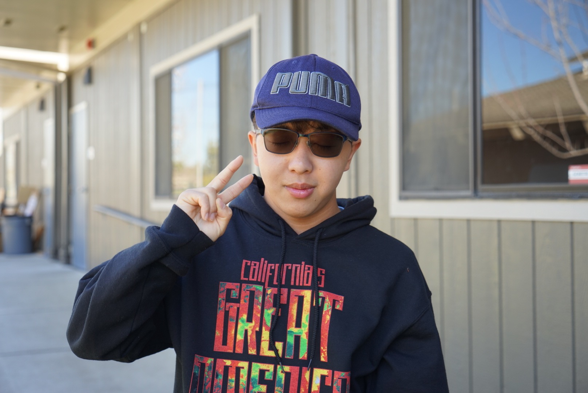
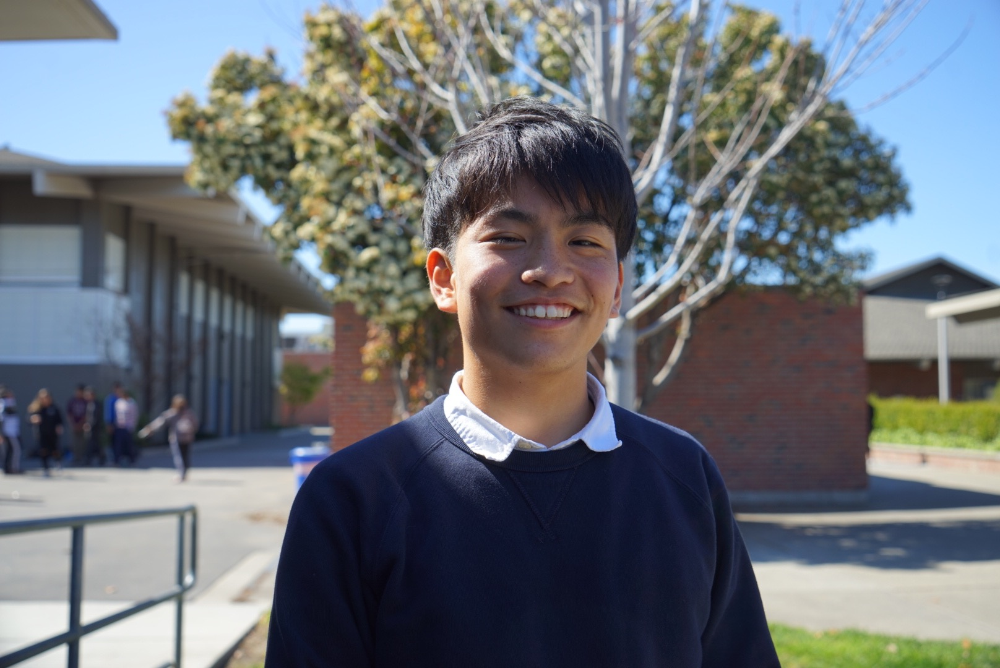

Bay Area Culture
A lot of us talk about how the Bay Area is like a bubble and it’s pretty different from the rest of the United States in a lot of ways. For example, the amount of competition that is here, whether it’s academically or otherwise in general. We don’t really see as much of a competitive spirit across the rest of the United States. A lot of that comes from our parents and how they were raised and the culture that they’ve experienced and their upbringing from different parts of Asia. While that’s not a bad thing, it can be difficult for a first-generation immigrant family to adapt to the different culture that we see in the United States. So, sometimes some parts of culture that aren’t necessarily very suitable for a different country are not adapted to suit different situations. And that can to the generation gap we feel with our parents. Although, I try to fight the negative culture, a lot of the unhealthy practices that we see here you can only counter that to a certain extent. We are being raised in this sort of setting and it becomes part of you and there are a lot of things that are ingrained in terms of mindset.

School & Family
School, grades, my parents and my friends are the biggest part of my identity. They influence a lot of decisions and how I behave. I go to school almost every day of the week, it’s influenced the way I behave and work with other people. My parents are a part of my life and my actions are based on decisions that they make for my good. My grades motivate me to work hard. I value my friends’ opinions so I try to take that into consideration when I make decisions.

Learning
I am proud to be a Lynbrook student. Even though I was only here for two years, I really like this school, more than my previous school. The teachers are so nice and the students are so kind to each other. There’s a lot of participation around school. It also feels very safe here. I love to come to Lynbrook every day. I love meeting my friends here and that I’m not lonely. I always love to come here to learn.

Family & Friends
I care a lot about my family. The’ve been with me through everything as a support system. I also care a lot about my friends, people that I have around me that help me and support me in everything I do. I value that they stay with me through everything and that I can ask them for help without feeling judged. I love that I can feel safe around them.

Culture & Language
I’m from Japan. In Japanese culture, we treat our belongings carefully. Japanese people think every object has a god in it, so we don’t break items. We don’t throw out things. I’ve seen students in America breaking their pencils, and when I first saw that, I felt kind of weird. So, I usually pick up those items. I’m proud of the Japanese language. It’s a language that can stand on its own, and unlike other languages, where they use English words, Japanese doesn’t.

Online
Online, I use a lot of emojis to try to express myself. I don’t type as fast as I talk, so I have to think a lot more. When you’re online, you can go back to whatever you say, so I don’t want to say anything that’s bad. My mom tells me that when you’re having a deep talk, you should do it in person or else it can come back to you later.
I Hear Lynbrook Dreaming: Poem by junior Tanvi Narvekar
I hear Lynbrook dreaming, the different dreams I see
Each different in its own way but all still in unity
Those of the future doctors, each one dreaming to help others with kindness and respect
The future scientist dreaming his or her dream while measuring acid into a beaker
The future teacher dreaming to be the help that he or she received from past teachers, the future artist dreaming in the art room
The future writer dreaming while scribbling on the piece of paper, the businessperson dreaming while working
The future singer’s dream, the future dancer’s on his or her way to the studio, or to the classroom, or to the job
The ambitious dream of the future engineer, or of the future nurse at school, or the future soldier studying and reading
Each dreaming about a future that only he or she wants to have and to no one else,
The dream belongs to the dreamers- and even when the dream seems unreachable, the dreamers will dream to the fullest extent to get it

Astronaut
I’ve always wanted to be an astronaut and I’ve always been fascinated by space. I’ve read a lot of books and that makes me more interested in being an astronaut. I feel like astronauts should be given more opportunities and rights. My great great grandfather wanted to be an astronaut and he was really close but it ended up being out of his reach. I want to become the next astronaut in my family. I go to astronaut camp and volunteer
there and other stuff like that to reach my goal.

Art
I have an interest in art. I want to graduate and major in something related to art. I want to be able to produce and entertain people with animation because I’m interested in graphic design. Art is relaxing, and it’s nice to do something with your hands.

Safe Space
I care about people knowing that they have a safe place somewhere. I know it’s really easy to get caught up in your head, and you really need a place to let it out. It’s sad that in some places, it’s hard to feel safe or accepted for who you are. People really need safe spaces to talk about and understand their feelings. My identity has changed as I’ve grown up. Sometimes, I don’t have people I can talk to about it. I feel like I can learn more about my identity if I can have a safe space to talk about it.


{kind=link}
{kind=link}
{kind=link}